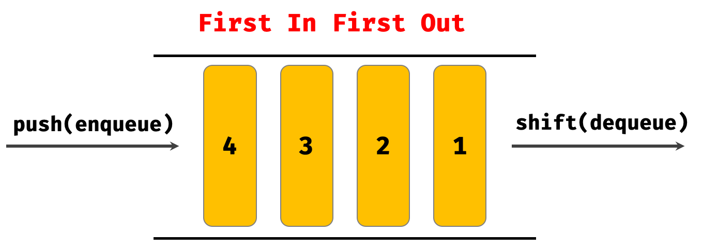
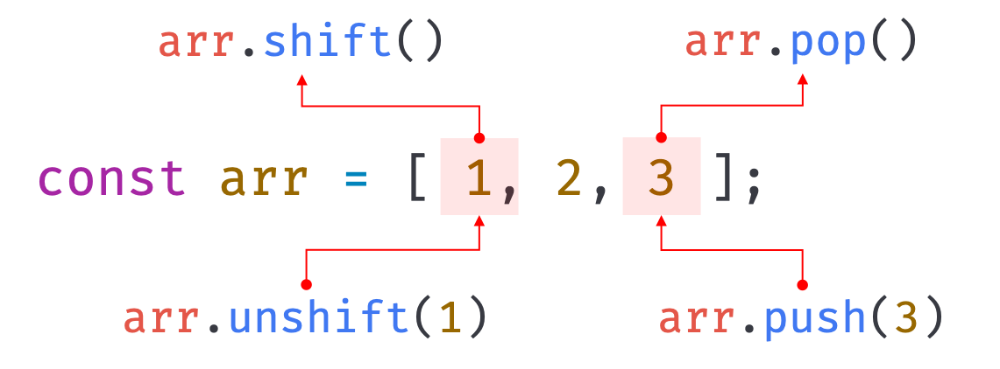
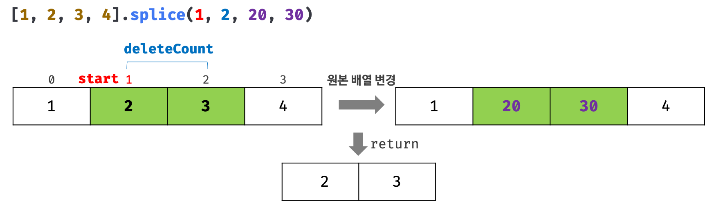

indexOf 메서드 대신 ES7에서 도입된 Array.prototype.includes 메서드를 사용하면 가독성이 더 좋다.
1 2 3 4 5 6 7 8
const arr = [1, 2, 2, 3];
// 배열 arr에서 요소 2를 검색하여 첫 번째로 검색된 요소의 인덱스를 반환한다. arr.indexOf(2); // -> 1 // 배열 arr에 요소 4가 없으므로 -1을 반환한다. arr.indexOf(4); // -> -1 // 두 번째 인수는 검색을 시작할 인덱스다. 두 번째 인수를 생략하면 처음부터 검색한다. arr.indexOf(2, 2); // -> 2
배열에 특정 요소가 존재하는지 확인할 때 유용하다.
1 2 3 4 5 6 7 8 9
const foods = ["apple", "banana", "orange"];
// foods 배열에 'orange' 요소가 존재하는지 확인한다. if (foods.indexOf("orange") === -1) { // foods 배열에 'orange' 요소가 존재하지 않으면 'orange' 요소를 추가한다. foods.push("orange"); }
📒 Array.prototype.pop : 원본 배열에서 마지막 요소를 제거하고 제거한 요소를 반환한다.
pop 메서드는 원본 배열을 직접 변경한다.
pop 메서드와 push 메서드를 사용하면 스택을 쉽게 구현할 수 있다.
1 2 3 4 5 6 7 8
const arr = [1, 2];
// 원본 배열에서 마지막 요소를 제거하고 제거한 요소를 반환한다. let result = arr.pop(); console.log(result); // 2
// pop 메서드는 원본 배열을 직접 변경한다. console.log(arr); // [1]
스택(stack)은 데이터를 마지막에 밀어 넣고, 마지막에 밀어 넣은 데이터를 먼저 꺼내는 후입 선출(LIFO - Last In First Out) 방식의 자료구조 다. 스택은 언제나 가장 마지막에 밀어 넣은 최신 데이터를 먼저 취득한다. 스택에 데이터를 밀어 넣는 것을 푸시(push)라 하고 스택에서 데이터를 꺼내는 것을 팝(pop)이라고 한다.
스택(stack)
8.5. Array.prototype.unshift🔴
📒 Array.prototype.unshift : 인수로 전달받은 모든 값을 원본 배열의 선두에 요소로 추가하고 변경된 length 프로퍼티 값을 반환한다.
unshift 메서드는 원본 배열을 직접 변경한다.
1 2 3 4 5 6 7 8
const arr = [1, 2];
// 인수로 전달받은 모든 값을 원본 배열의 선두에 요소로 추가하고 변경된 length 값을 반환한다. let result = arr.unshift(3, 4); console.log(result); // 4
📒 Array.prototype.shift : 원본 배열에서 첫 번째 요소를 제거하고 제거한 요소를 반환한다.
shift 메서드는 원본 배열을 직접 변경한다.
shift 메서드와 push 메서드를 사용하면 큐를 쉽게 구현할 수 있다.
1 2 3 4 5 6 7 8
const arr = [1, 2];
// 원본 배열에서 첫 번째 요소를 제거하고 제거한 요소를 반환한다. let result = arr.shift(); console.log(result); // 1
// shift 메서드는 원본 배열을 직접 변경한다. console.log(arr); // [2]
큐(queue)는 데이터를 마지막에 밀어 넣고, 처음 데이터, 즉 가장 먼저 밀어 넣은 데이터를 먼저 꺼내는 선입 선출(FIFO - First In First Out) 방식의 자료구조 다. 큐는 언제나 데이터를 밀어 넣은 순서대로 취득한다.
큐(queue)
8.7. Array.prototype.concat
📒 Array.prototype.concat : 인수로 전달된 값들(배열 또는 원시값)을 원본 배열의 마지막 요소로 추가한 새로운 배열을 반환한다.
1 2 3 4 5 6 7 8 9 10 11 12 13 14 15 16 17 18
const arr1 = [1, 2]; const arr2 = [3, 4];
// 배열 arr2를 원본 배열 arr1의 마지막 요소로 추가한 새로운 배열을 반환한다. // 인수로 전달한 값이 배열인 경우 배열을 해체하여 새로운 배열의 요소로 추가한다. let result = arr1.concat(arr2); console.log(result); // [1, 2, 3, 4]
// 숫자를 원본 배열 arr1의 마지막 요소로 추가한 새로운 배열을 반환한다. result = arr1.concat(3); console.log(result); // [1, 2, 3]
// 배열 arr2와 숫자를 원본 배열 arr1의 마지막 요소로 추가한 새로운 배열을 반환한다. result = arr1.concat(arr2, 5); console.log(result); // [1, 2, 3, 4, 5]
// 원본 배열은 변경되지 않는다. console.log(arr1); // [1, 2]
push와 unshift 메서드는 concat 메서드로 대체할 수 있다. 이들은 매우 비슷하지만 다음과 같은 차이점을 가지고 있다. - push와 unshift 메서드는 원본 배열을 직접 변경하지만 concat 메서드는 원본 배열을 변경하지 않고 새로운 배열을 반환한다. - 인수로 전달받은 값이 배열인 경우 push와 unshift 메서드는 배열을 그대로 원본 배열의 마지막/첫 번째 요소로 추가하지만 concat 메서드는 인수로 전달받은 배열을 해체하여 새로운 배열의 마지막 요소로 추가한다.
concat 메서드는 ES6의 스프레드 문법으로 대체할 수 있다. 결론적으로 push/unshift 메서드와 concat 메서드를 사용하는 대신 ES6의 스프레드 문법을 일관성 있게 사용하는 것을 권장한다.
1 2 3 4 5 6
let result = [1, 2].concat([3, 4]); console.log(result); // [1, 2, 3, 4]
// concat 메서드는 ES6의 스프레드 문법으로 대체할 수 있다. result = [...[1, 2], ...[3, 4]]; console.log(result); // [1, 2, 3, 4]
push, pop, unshift, shift 메서드는 모두 원본 배열을 직접 변경하는 메서드(mutator method)이며 원본 배열의 처음이나 마지막에 요소를 추가하거나 제거한다.
push, pop, unshift, shift 메서드
8.8. Array.prototype.splice🔴
📒 Array.prototype.splice : 원본 배열의 중간에 요소를 추가하거나 중간에 있는 요소를 제거하는 경우 사용한다.
Array.prototype.splice(제거를 시작할 인덱스, [제거할 요소 수], [삽입할 요소])
start : 원본 배열의 요소를 제거하기 시작할 인덱스. start가 음수인 경우 배열의 끝에서의 인덱스를 나타낸다.
deleteCount: (옵션) start부터 제거할 요소의 개수. 생략시 시작 인덱스부터 모든 요소를 제거한다.
items: (옵션) 제거한 위치에 삽입할 요소들의 목록이다. 생략할 경우 원본 배열에서 요소들을 제거하기만 한다.
splice 메서드는 원본 배열을 직접 변경한다.
Array.prototype.splice 메서드
1 2 3 4 5 6 7 8 9
const arr = [1, 2, 3, 4];
// 원본 배열의 인덱스 1부터 2개의 요소를 제거하고 그 자리에 새로운 요소 20, 30을 삽입한다. const result = arr.splice(1, 2, 20, 30);
// 중첩 배열을 평탄화하기 위한 깊이 값을 2로 지정하여 2단계 깊이까지 평탄화한다. [1, [2, [3, [4]]]].flat(2); // -> [1, 2, 3, [4]] // 2번 평탄화한 것과 동일하다. [1, [2, [3, [4]]]].flat().flat(); // -> [1, 2, 3, [4]]
// 중첩 배열을 평탄화하기 위한 깊이 값을 Infinity로 지정하여 중첩 배열 모두를 평탄화한다. [1, [2, [3, [4]]]].flat(Infinity); // -> [1, 2, 3, 4]
9. 배열 고차 함수
고차 함수(Higher-Order Function, HOF)는 함수를 인수로 전달받거나 함수를 반환하는 함수를 말한다. 고차 함수는 불변성을 지향하는 함수형 프로그래밍에 기반을 두고 있다. 함수형 프로그래밍은 순수 함수와 보조 함수의 조합을 통해 로직 내에 존재하는 조건문과 반복문을 제거하여 복잡성을 해결하고 변수의 사용을 억제하여 상태 변경을 피하려는 프로그래밍 패러다임이다. 즉, 순수 함수를 통해 부수 효과를 최대한 억제하여 오류를 피하고 프로그램의 안정성을 높이려한다. 자바스크립트의 배열은 매우 유용한 고차 함수를 제공하고 이는 매우 활용도가 높다.
특히, 9.2 ~ 9.9에서 소개되는 forEach, map, filter, reduce, some, every, find, findIndex 메서드는 자신을 호출한 배열의 요소를 순회하면서 인수로 전달된 콜백 함수를 호출한다는 공통점을 지녔다.
map 메서드는 콜백 함수를 호출하면서 3개(요소값, 인덱스, this)의 인수를 전달한다.
forEach 메서드는 언제나 undefined를 반환하고, map 메서드는 콜백 함수의 반환값들로 구성된 새로운 배열을 반환하는 차이가 있다.
map, filter, reduce의 차이를 잘 알아두자. 이들은 콜백 함수의 반환값들로 구성된 새로운 배열을 반환하는 공통점이 있지만 반환값에 따른 차이를 가진다. - map : 메서드를 호출한 배열의 length = 새로운 배열의 length - filter : 메서드를 호출한 배열의 length >= 새로운 배열의 length - reduce : 새로운 배열의 length = 1
1 2 3 4 5 6 7 8 9 10 11 12 13
const numbers = [1, 4, 9];
// map 메서드는 numbers 배열의 모든 요소를 순회하면서 콜백 함수를 반복 호출한다. // 그리고 콜백 함수의 반환값들로 구성된 새로운 배열을 반환한다. const roots = numbers.map((item) =>Math.sqrt(item));
// 위 코드는 다음과 같다. // const roots = numbers.map(Math.sqrt);
const count = fruits.reduce((acc, cur) => { // 첫 번째 순회 시 acc는 초기값인 {}이고 cur은 첫 번째 요소인 'banana'다. // 초기값으로 전달받은 빈 객체에 요소값인 cur을 프로퍼티 키로, 요소의 개수를 프로퍼티 값으로 // 할당한다. 만약 프로퍼티 값이 undefined(처음 등장하는 요소)이면 프로퍼티 값을 1로 초기화한다. acc[cur] = (acc[cur] || 0) + 1; return acc; }, {});
// 콜백 함수는 총 5번 호출되고 다음과 같이 결과값을 반환한다. /* {banana: 1} => {banana: 1, apple: 1} => {banana: 1, apple: 1, orange: 1} => {banana: 1, apple: 1, orange: 2} => {banana: 1, apple: 2, orange: 2} */
// 위와 같이 프로퍼티 키와 프로퍼티 값으로 요소의 인덱스를 구하는 경우 다음과 같이 콜백 함수를 추상화할 수 있다. functionpredicate(key, value) { // key와 value를 기억하는 클로저를 반환 return(item) => item[key] === value; }

 스택(stack)
스택(stack)